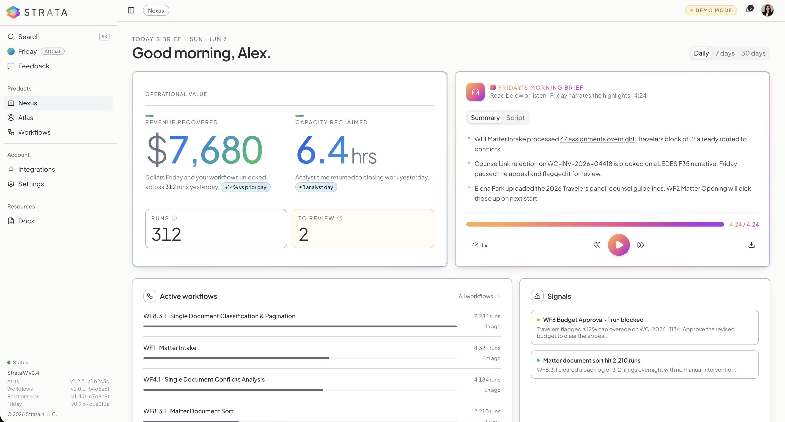

AI agents that run the operational work your firm doesn’t bill for. We turn it into recovered revenue and reclaimed capacity.

THE PLATFORM, BRIEFLY
Where your firm’s operational map lives. Data sources connected, knowledge organized, ontology managed, workflows configured. The technical surface, operated by your innovation and IT teams alongside ours.
The executive dashboard. Operational Value at the top: Time Saved, Revenue Recovered. Every workflow’s health, every integration’s status, and a Morning Brief in your inbox. Built for the CIO, CFO, COO and Managing Partner.
The design surface for new automations. Workflows get built here, by our team and your SMEs together, before they’re promoted into production.
The engine underneath. Every workflow runs on it. Every dashboard reads from it. Every integration flows through it. One foundation for the work.
We don’t lead with the AI. We lead with the numbers it moves.
OPERATIONAL VALUE
REVENUE RECOVERED
Dollars collected that would have been written off. (+18% MoM)
CAPACITY RECLAIMED
Hours returned to paralegals, billing, and intake. (≈ 12 FTE-weeks)
FROM THE FIELD
INVOICES A MONTH, ONE CLIENT FIRM
That was the workload for one firm’s five-to-seven-person appeals team, and below the appeal threshold, the money got walked away from. Strata’s agents now analyze every line-item deduction and draft each appeal narrative for attorney review. Nothing is auto-submitted.
ONE CLIENT FIRM
E-billing portals: 19
Appeal cycle: 4-6 weeks
Appeals team: 5-7 people
Auto-submitted appeals: 0
WORKFLOWS WE RUN
Strata operates underneath the billable work, not against it. The workflows on this page are clerical, operational, or administrative.
The e-billing layer of your firm, run by agents: guideline compliance before an invoice goes out, deduction analysis when it comes back, and the portal work in between.
Every reduction analyzed against the invoice and the client’s guidelines. Every appeal narrative drafted for attorney review. Nothing is auto-submitted.
Proformas chased before they go stale, aged AR worked in 30, 60, and 90 day buckets, client-facing sends approved by a person.
The unbilled drag between signing a lateral and their book billing here: conflicts questionnaires, client and matter transfers, timekeeper and billing setup, systems access.
Three-way reconciliation on schedule instead of when someone finds time, unclaimed-funds aging, disbursement checks.
AR, AP, payroll support, records and document management. High-volume, rule-heavy, and exactly what agents are for.
STRATA ATLAS
The knowledge that runs your firm lives in people’s heads. Atlas puts it to work.
Atlas learns how your firm actually works.
Your knowledge, organized so an agent can act on it.
Agents run the work. Recovery reported every week.
Ask it anything. Correct what it misses. The map stays yours.
Pregunta: What does onboarding a lateral hire involve?
Systems access gets provisioned, active matters transfer, conflicts re-run against the new book, and the lateral’s client relationships map into the firm’s graph.
● Traced across 5 nodes in your operational map.
Write-offs over $5,000 route to the Managing Partner for sign-off.
✔ Confirmed by your firm
GOVERNANCE
Bring your security team to the first demo. What they’ll ask for is what we built first.
Every answer an agent gives carries claim-level citations back to source.
Human checkpoints are workflow steps. Your people decide; the run resumes the moment they respond.
The Library of Actions works the way your DBAs think: approved actions only, proper credentials, logged completely.
Model and tool choice is governed per step, not per vendor.
email, schedule, or on demand
approved actions only
wherever judgment matters
logged end to end
GET STARTED
Your firm has a write-off number. Let’s find it.
APPROVALS
Your team approves. Agents do the work.
AUDIT
Every run logged end to end.
SECURITY
SSO · encrypted credentials · account isolation